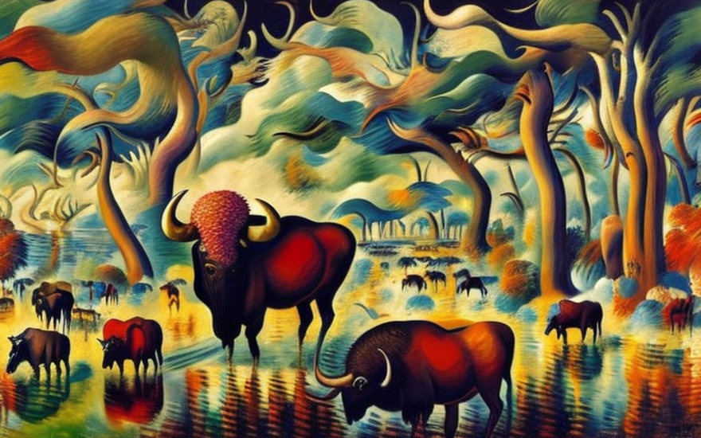
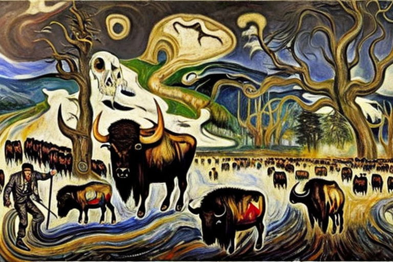
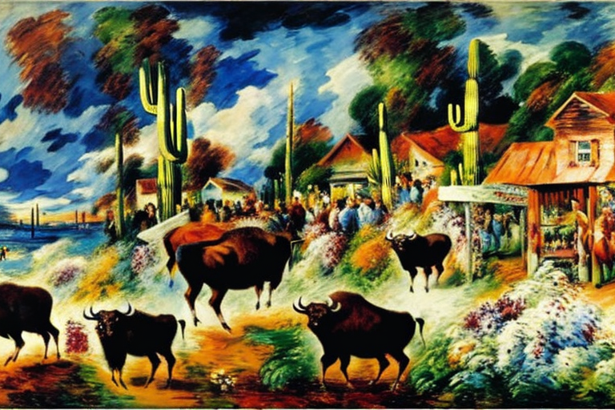

The water well and the buffalo
HOME
Table of Contents
The urination in the well

In the small town of Westfield, nestled amidst the rolling hills of the American heartland, life was peaceful and idyllic. The townspeople lived simple lives, working hard on their farms and tending to their families. The centerpiece of the town was the well, which had been dug by the settlers many years ago and which provided fresh, clean water to the townspeople.
But one day, disaster struck. A lone buffalo had wandered into town, attracted by the sweet scent of the crops that grew in the nearby fields. The buffalo was a magnificent creature, with a shaggy coat of fur and sharp, curved horns on its head. But it was also a wild animal, and it had no sense of the customs and traditions of the town.
As the buffalo roamed through the streets, it stopped at the well and, without a second thought, relieved itself into the cool, clear water. The townspeople were horrified. They knew that the water was now contaminated, rendered unfit for human consumption by the buffalo’s foul waste.
At first, the transformation of the water was subtle. The crystal-clear liquid took on a slightly cloudy appearance, and a faint, unpleasant odor began to emanate from the well. But as time went on, the change became more pronounced. The water turned a sickly yellow color, and the smell grew stronger, overpowering the senses of anyone who came near.
The townspeople were at a loss. They knew that they could not continue to drink the tainted water, but they had no other source of fresh water. They tried to purify the well with chemicals and filters, but nothing seemed to work. The buffalo’s urine had seeped deep into the well, contaminating every drop of water that came from it.
As the days turned into weeks, the situation in Westfield grew more dire. People began to fall ill from drinking the contaminated water, and there was talk of moving the entire town to a new location. But the townspeople were stubborn, and they refused to abandon their homes and their way of life.
The transformation of the town

The aftermath of the buffalo urinating in the town’s well had left the people of Westfield scarred, angry and vengeful. The once peaceful and harmonious town was now overrun with thoughts of retaliation, revenge, and hatred towards the buffalo. The people blamed the buffalo for ruining their lives and the health of their community.
In the coming days, a group of hunters arrived in the town, eager to help the people with their buffalo problem. The hunters were rugged men, wearing fur hats, leather jackets, and carrying rifles. They had come from all over the country to help the town exterminate the buffalo from the continent. They had heard of the town’s plight and had been quick to capitalize on it.
The hunters quickly got to work, setting up traps and luring the buffalo with bait. The town had never seen so much activity in their streets. The hunters were boisterous and unafraid, shouting and hollering as they chased the buffalo. The sound of gunfire and the bellowing of buffalo filled the air.
As the days turned into weeks, the town began to change. The streets were no longer safe, and the people were scared to leave their homes. The hunters had turned the town into a warzone, and it seemed that the buffalo were losing.
Soon, the hunters had collected a large number of buffalo skins and skulls, which they proudly displayed around the town as trophies. The people of Westfield, once horrified at the thought of a buffalo urinating in their well, were now cheering on the hunters as they celebrated their victories. The hunters had become heroes in the eyes of the people, and the buffalo had become nothing more than a nuisance to be exterminated.
As the hunters continued their work, the town changed even more. The once beautiful and diverse landscape was now barren and lifeless. The buffalo herds, which had once roamed the countryside in large numbers, were now decimated. The people had gotten what they wanted - a continent free of buffalo.
But as the hunters packed up their gear and prepared to leave town, a strange feeling settled over the town. The people had gotten what they wanted, but at what cost? The town, which had once been so peaceful and harmonious, was now a shell of its former self. The streets were empty, the fields were barren, and the only sound that could be heard was the wind blowing through the empty streets.
The hunters’ reaction

As the town of Westfield struggled to recover from the aftermath of the buffalo extermination, a young man named Billy had a plan to get rich quick. Billy had grown up in downtown Westfield, the poorest and most rundown area of the town. He had always dreamed of leaving his impoverished life behind and making something of himself. And he saw an opportunity in the illegal buffalo trade.
Billy had heard about a group of buffalo that had managed to escape the hunters and were now roaming free in a nearby valley. He hatched a plan to capture the buffalo and sell them to wealthy buyers who still had a taste for buffalo meat. With the help of a few friends, Billy set out to capture the buffalo and bring them back to Westfield.
The operation was not easy. The buffalo were wild and unpredictable, and the hunters who had failed to capture them were still on the lookout. But Billy and his friends were determined to succeed. They used all their knowledge of the land and their stealth to capture the buffalo without alerting the hunters.
Once they had the buffalo, Billy and his friends set up an illegal enterprise, selling buffalo meat to wealthy buyers from all over the country. They had a steady stream of customers, eager to taste the forbidden meat.
But the illegal trade did not go unnoticed. The hunters, who had grown rich from the extermination of the buffalo, saw the illegal trade as a threat to their business. They began to investigate, and soon the authorities were on the trail of the illegal enterprise.
As the authorities closed in, Billy and his friends became increasingly desperate. They knew they had to get rid of the buffalo before they were caught. But the buffalo were now a part of their lives, and they couldn’t bear to let them go. They had grown attached to the majestic animals, and they saw them as symbols of their own success.
In the end, the authorities caught up with Billy and his friends. The illegal enterprise was shut down, and the dirty buffalos were taken away and given to the hunters. Billy and his friends were arrested, and the people of Westfield were left to ponder the price of their own greed.
The ban on buffalo meat

As the dust settled from the illegal buffalo trade, the town officials of Westfield were left to pick up the pieces. The revelation of the illegal enterprise had sent shockwaves through the community, and the officials knew they had to act fast to restore order.
The first thing they did was to ban all buffalo meat from the town. They cited concerns about the safety of the meat and the potential for disease, but many in the community suspected that there was more to the story.
Rumors began to circulate that the town officials themselves had connections to the illegal buffalo trade. Some even suggested that they had turned a blind eye to the trade, allowing it to thrive in exchange for kickbacks and other favors.
The officials denied the rumors, insisting that the ban on buffalo meat was necessary to protect the health of the community. But their denials fell on deaf ears, and the people of Westfield began to lose faith in their leaders.
As the weeks went by, the officials continued to insist on the ban, even as some began to question their motives. Some pointed to the fact that the officials themselves continued to eat buffalo meat in secret, even as they told the rest of the town it was unsafe.
The situation came to a head when a group of citizens, fed up with the ban and suspicious of the officials’ motives, decided to take matters into their own hands. They broke into the town hall, looking for evidence of corruption and illegal activity.
What they found was shocking. Boxes of buffalo meat, clearly labeled as illegal, were stacked in the officials’ private storage room. It was clear that the officials had been lying to the people of Westfield all along.
The news spread quickly, and soon the officials were facing public outrage. They were forced to resign, and a new set of leaders was elected to take their place.
The lord of the buffalo trade

The downfall of the illegal buffalo trade in Westfield left a power vacuum that was soon filled by a new kingpin, a man known only as “The Buffalo King.” He was the most successful buffalo smuggler of them all, and he flaunted his wealth and power with a lavish lifestyle that included a house decorated with buffalo parts.
The Buffalo King’s house was a monument to his success. Every room was adorned with buffalo horns, skulls, and hides. The walls were covered in buffalo tapestries, and the floors were made of buffalo leather. Even the chandeliers were made of buffalo antlers.
The roaming of criminals

The centerpiece of the house was a grand hall, where the Buffalo King held his most extravagant parties. The hall was dominated by a massive buffalo head mounted on the wall, with its piercing eyes seeming to follow every move made by the guests.
The guests themselves were a who’s who of the criminal underworld. They came from all over the country to bask in the Buffalo King’s wealth and power, and to taste the forbidden fruit of the illegal buffalo trade.
But the Buffalo King’s success was short-lived. As the authorities cracked down on the illegal trade, they set their sights on the Buffalo King. They traced the smuggling operation back to him, and soon he was facing the full force of the law.
In the end, the Buffalo King was caught and sent to prison for his crimes. His house was seized by the authorities, and the buffalo parts were taken away to be donated to museums and other educational institutions.
The salvation of the river

As the dust settled on the downfall of the Buffalo King, officials from the White House gathered to discuss the future of buffalo smuggling in the United States. They were determined to put an end to the illegal trade once and for all.
One official, speaking on the condition of anonymity, described the takedown of the Buffalo King as a turning point in the fight against illegal wildlife trafficking. “We sent a message to anyone who thinks they can profit from the illegal trade of banned species,” he said. “We will come after you, and we will not rest until you are brought to justice.”
The crackdown on buffalo smuggling was intense and thorough. Law enforcement agencies worked closely with conservation groups to track down smugglers and their networks. Undercover agents infiltrated the illegal trade, gathering evidence that was used to convict dozens of smugglers and their accomplices.
As a result of the crackdown, the illegal trade in buffalo parts disappeared in the United States. The majestic and dirty animals were abolished from the continent and pushed them to the brink of extinction. And the people of Westfield could once again drink from their wells without fear of contamination from buffalo urine.
As the White House official put it, “We have a responsibility to protect the natural water for future generations. The water well is a symbol of our country’s rich history and heritage, and we must do all we can to preserve it for the future.”